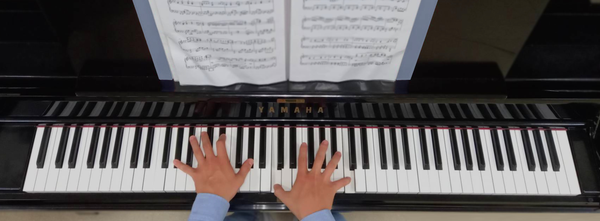

Hands IN Piano
- 時間：2021年6月12日 晚上七點
- 地點：學生活動中心演講廳 A101
公演介紹
音樂不只是音樂，它有心跳，它有生命。只要伸出雙手，在鋼琴上按下黑或白的琴鍵，那我們就能在琴鍵上，奏出無限的樂章。
睽違四年，東華鋼琴社再次迎來純演奏的音樂盛會。在這場盛會裡，我們有鋼琴獨奏，有四手聯彈，也有大小提琴加鋼琴的合奏。
因為疫情的緣故，人們與不少音樂會失之交臂，生活中缺少了一些情趣，若覺得可惜的話，不妨來到東華鋼琴社的期末公演，我們雖不是專業人士，但彈奏出的音樂，是有心跳、有生命的。
36個黑鍵和52個白鍵，交錯的黑白鍵蘊藏著各種不同的音色，不論是古典樂，還是流行樂，只要將雙手放在琴鍵上，讓手指在上頭靈巧地奔跑、跳躍，琴聲就會從指尖流瀉而出，在人們的心裡，譜下難忘的樂章。
公演活動負責人
- 指導老師：林世悠
- 總召：謝予翔
- 副召：王文瑾、薛祖恩
表演者
王淳正、方彥淳、李奕辰、吳蕙宇、邱敬耘、林夢軒、林慧、胡哲綸、洪詩琳、翁淳証、陳文筆、陳靖、孫藝庭、常曉夫、廖宸尉、劉品佑、薛祖恩
工作人員
李承叡、周家祥、洪晨瑜、郭儀廷、涂鈞晽、陳妤甄、陳佾聖、陳禹彣、梁馨元、張舒渝、楊于楨、楊陞、廖孜瑀、謝嘉珊、簡銘漢